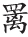

泉壑带茅茨 [1] ，云霞生薜帷 [2] 。竹怜新雨后 [3] ，山爱夕阳时。闲鹭栖常早，秋花落更迟。家僮扫萝径 [4] ，昨与故人期 [5] 。
【题解】
谷口，在今陕西礼泉县东北，当泾水出山之口，故名。相传西汉郑朴（字子真）耕隐于此，不应征聘，志行高洁，名震京师，人称谷口郑子真。补阙，官名。杨补阙，名不详。钱起有《山中酬杨补阙见过》诗，所写当为同一人，诗写春天景色，当为次年春作，正与“昨与故人期”相应。诗云：“青琐同心多逸兴，春山载酒远相随。却惭身外牵缨冕，未胜杯前倒接

。”是时钱起尚在朝为官，未曾归隐，或过着半官半隐的生活。或钱起书斋不实在谷口，只是仰慕谷口郑子真高行，故称谷口书斋。钱起诗中屡屡提到谷口，《暮春归故山草堂》云：“谷口春残黄鸟稀，辛夷花尽杏花飞。始怜幽竹山窗下，不改清阴待我归。”故山草堂，疑即谷口书斋。又《过沈氏山居》云：“酒酣出谷口，世网何羁束。”《赠东邻郑少府》云：“秩满归白云，期君访谷口。”《题玉山村叟屋壁》云：“谷口好泉石，居人能陆沉。”可见谷口并非实指，乃是喻称。【评析】
此诗前七句都写书斋内外景色，宛然一幅清新静谧的雨后秋景图。尤其是颔联二句，以拟人手法写景，一近一远，将雨后翠竹妩媚之姿与夕照青山绚丽之景相映成趣，活现目前。末句点题，盼望友人践约前来共赏美景，景为情设，画龙点睛，全诗顿活。
【注释】
[1] 茅茨：茅屋，指书斋。
[2] 薜：薜荔，木本植物，茎缘木蔓生，披拂如帷帐，故曰“薜帷”。《山中酬杨补阙见过》：“红泉翠壁薜萝垂。”可作薜帷注脚。《楚辞•九歌•湘夫人》：“网薜荔兮为帷。”
[3] 怜：爱。
[4] 家僮：家中奴仆。萝：女萝，地衣类植物。
[5] 昨：先前。故人：指杨补阙。期：约会。